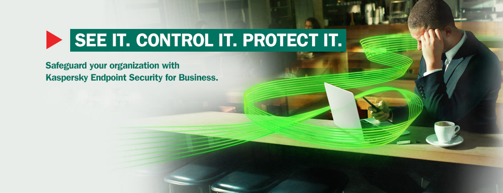

Kaspersky Antivirus Technical Support | +1800-862-1907 | Phone Number
Kaspersky antivirus is one of the most used antivirus in the world. Kaspersky antivirus keeps your PC performance optimized and keep your computer secured while surfing internet. It is one of the best Kaspersky internet security for your PC and one of its great features when it comes to remove viruses with Kaspersky removal tool, spywares and automatically scans your computer. Kaspersky antivirus is best in this field from a long-time, it is a recognized and accepted name in this world of computers, and it provides Kaspersky internet security and protects thousands of PCs from internet risk.
Kaspersky Customer Service +1800-862-1907
With all these features the Kaspersky technical support was the last and
most important service that a user can look for, Intel Security offers
official Kaspersky support. You can always dial Kaspersky customer support
phone number for virtually all support related to your Kaspersky product.
Kaspersky customer service, Kaspersky technical support and Kaspersky internet
security team specialized and trained to fix any issue related to the
Kaspersky antivirus and you can get the Kaspersky support through our toll
free number.
Viruses and malwares have turned out to be one of the biggest threats
for computer users. Every time you browse the internet or connect any
external drive to your system, and it increases the risk of being
infected by malicious programs. So, to safeguard your system from
viruses you need to Kaspersky download, activate Kaspersky antivirus from
www.Kaspersky.com/activate, which can cancel out the risk of virus and
malwares in your system. And there are situations come when the software
is not working fine and customer needs an instant online Kaspersky
technical support for the software issues. Most of the users have demand
for a one stop solution to take care all of the issues whether it is
computers, peripheral or software related and not something which has
limited support boundaries.